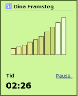

Hur det fungerar?
TypingMaster följer dina framsteg i realtid när du gör skrivövningarna.
Om du skriver med god precision och tillräckligt flytande, föreslår programmet att du kan gå vidare och låter dig slutföra övningen på en kortare tid. Om det ser ut som att du behöver öva mer, låter TypingMaster dig slutföra övningen från början till slut.
Bättre Resultat på Kortare Tid
Optimerat lärande innebär att dina övningar baseras helt efter ditt personliga undervisningsbehov. Följaktligen kommer du inte att behöva göra övningar som du inte är i behov av. Din totala färdighetsnivå kommer också att bli bättre, eftersom svårigheter omedelbart uppmärksammas och extraövningar erbjuds.